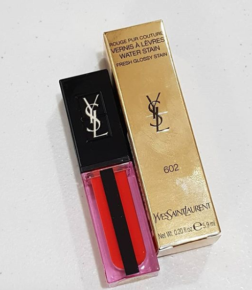
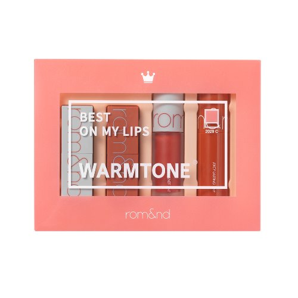

의식의 흐름에 따른 코스메틱 잡담

입생 워터틴트
입생로랑 워터스테인 602호
또다시 팔랑귀 팔락이면서 발매되자마자 사봤습니다.
제가 화장은 잘 안해도 화장품은 정말 열심히 구매하지용 ㅋㅋ
처음에 612호 생각하고 갔는데 너무 뻘겅뻘겅만 사는거 같아서 602호로 결정 :)
입생 틴트 처음 나왔을때 두번인가 구매해보고 바르면 입술이 너무 건조해져서 몇번 사용못했었는데
지치지도 않고 또 도전합니다. ㅋㅋㅋㅋㅋ
확실히 건조함은 덜 한거 같아요 :)
샬롯틸버리 슈퍼스타 립스
색상: 와일드 립스
최근(?) 구매한 것중 만족도가 젤 높습니다 :D
색도 제형도 케이스도 다 맘에 들어요 :D :D :D
아워글라스 컨페션 울트라 슬림 립스틱
2월 영국갔을때 리버티에서 구매했는데
처음에는 그냥 그렇다 에서 → 최근 오 색 예쁘다 로 의견이 바뀌었습니다.
근데 이상하게 손은 잘 안감;;
팻 맥 그라스 BLITZTRANCE™ LIPSTICK
색상: 블러드 러시
번쩍이는 립스틱에 미련을 못버리고 또다시 사 보았습니다.
발색이 어마무시해서 조금만 발라야 합니당;;;
가네보 밀라노 컬렉션
6월 후쿠오카 여행때 엘레강스파우더를 못사고 면세에서 충동구매했습니다.
잘 쓰고 있습니당 :)
바비브라운 러시안돌
인터넷 면세에서 구매한 것 중 젤 제 취향입니다.
바비브라운 과 디올 아이섀도우는 별로인데 두 브랜드 다 립스틱은 맘에듭니다 :D :D
(그냥 내가 섀도우보다 립스틱을 좋아하고 상대적으로 많이사용해서 그런것일수도;;)
리파캐럿
요것도 갤러리아 면세로 산건데 저녁에 나름 열심히 얼굴 문지르고 있습니다.
과연 효과가 있을 것인가 :3

그리고 웹서핑하다 낚여서 산
롬앤 미니 립 키트:: 베스트 온 마이 립스
요즘 립스틱 제형 넘 훌륭하네요
다 잘 만드는거 같아요 ;ㅂ;
엄청 부드럽게 발립니다.
로레알 루즈 시그니처:: 모카 & 코랄
이것도 역시 사람들의 추천에 홀려서 구매해봤습니다.
리퀴드 타입 절대 못 발랐었는데 기술의 발전(?) 놀랍습니다!! +ㅂ+
바를때 사탕향(?)이 나는게 저는 별로이긴 합니다;;
누드톤 이라던가 옅은 핑크색 정말 안어울리는데 요 모카는 괜춘하더라구요
단독으로 발라도 될 정도로 :)
한참 신나게 사다가 요즘 좀 소강상태 입니다.
덥고 기운이 없네여
휴가를 일찍 다녀와서 7월은 내리 일하기싫다~기운없셔~를 외치며 보낸것 같습니다 ㅜㅜ
그래서 8월 강릉 갈거에요 (응?)
이번주 있을 톰요크 공연과 8월 강릉과 띄염띄염 예약해놓은 소소한 이벤트를 기다리며
다시 로동하러 갑니다 ㅜㅜ